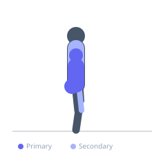
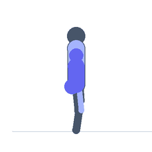

Exercise guide / Bear Crawl
Bear Crawl
The bear crawl is a locomotion-based functional exercise in which the athlete moves forward on hands and feet with the knees hovering a few centimeters above the floor, maintaining a flat back and neutral spine throughout the movement. It trains contralateral limb coordination, shoulder and hip stability under load, and deep core anti-extension strength. The bear crawl is widely used in athletic performance preparation, rehabilitation, and functional movement screen corrective programming.
Primary muscles
transverse abdominis
deltoid anterior
gluteus maximus
Secondary muscles
pectoralis major sternal
rectus femoris
triceps long head
Stabilizers
erector spinae
gluteus medius
Equipment
No Equipment (Bodyweight)


Starting position
- Begin on hands and knees (quadruped) with the knees lifted to hover approximately 2–5 cm above the floor. Wrists under shoulders, knees under hips.
Setup
- No equipment required. Adequate floor space needed for crawling distance.
Steps
- Step 1: Begin in the hovering quadruped position with knees 2–5 cm off the floor.
- Step 2: Move the right hand and left foot forward simultaneously, maintaining a flat back.
- Step 3: Follow with the left hand and right foot (contralateral pattern).
- Step 4: Keep the hips level — do not let them rise or rotate as you move.
- Step 5: Continue crawling forward for the prescribed distance while maintaining form throughout.
Coaching cues
- Hips level — no rotation
- Opposite arm and leg together
- Knees hover — don't touch
Breathing
- Breathe continuously throughout. Do not hold breath.
Range of motion
- Consistent knee hover. Full forward reach on each hand step.
Tempo
- Typically 10–20 meters per set. Slow for quality, faster for conditioning.
Common mistakes
- Letting the hips rise — the torso and hips should remain at a consistent, level height
- Moving ipsilateral limbs (same-side hand and foot) — the pattern must be contralateral
- Dropping the knees to the floor between steps
Safety
- Wrist discomfort is common for those with limited wrist extension — use fist position or push-up handles if needed.
- Start with slow, deliberate movement before increasing pace.
Training
- endurance: 1–1 reps
- endurance: 3–5 sets
- Rest: {'endurance': 60}